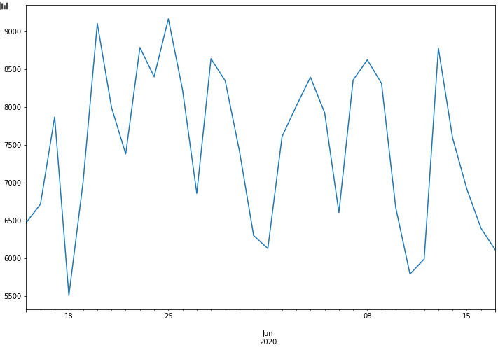
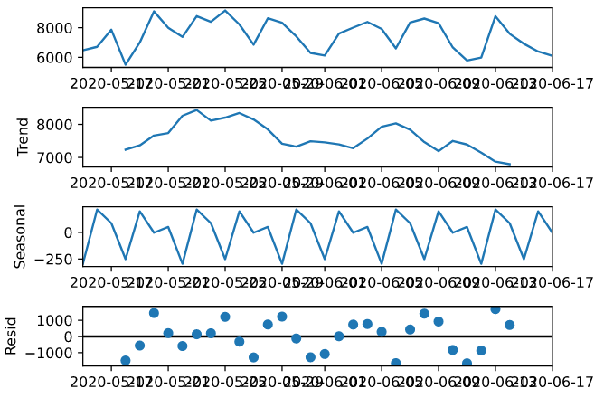
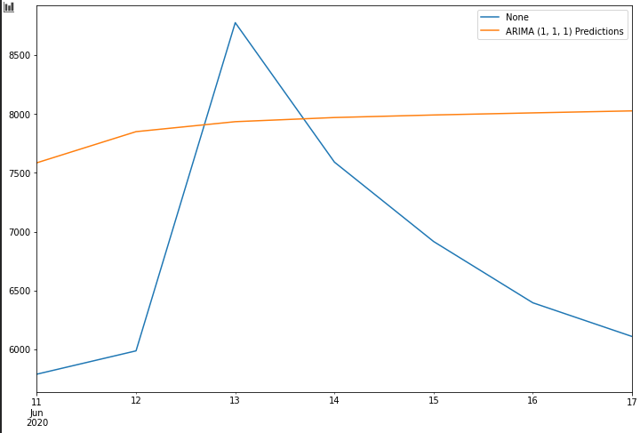
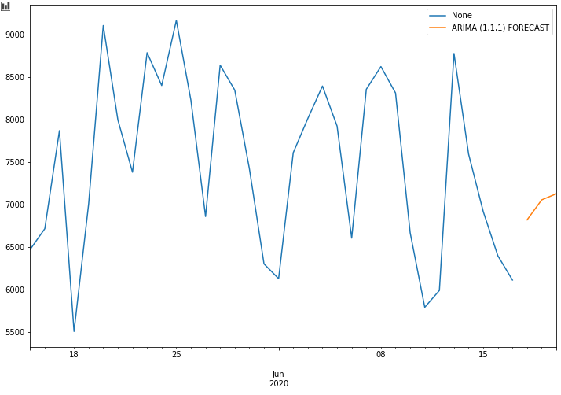

Time Series - Solar Power
Here I have a data-set on solar power generation of a power plant in India at 15 minute intervals over a 34 day period. I will use an ARIMA model without the seasonal component to forecast 3 days into the future.
There is a 'DAILY_YIELD' column that gives the cumulative amount of energy produced for that day. I will use the max DAILY_YIELD for each day and create a simplified data set of this daily data for the 34 days recorded. Below is the transform code. Feel free to skip over it.
data.index = pd.to_datetime(data.index, format='%d-%m-%Y %M:%S')
data = data['DAILY_YIELD']
dates = pd.date_range(start='15-05-2020', end='17-06-2020', freq='D')
df = pd.Series(data=0.0, index=dates)
for i in df.index:
i = str(i)[:10]
df.loc[i] = data.loc[i].max()
df = df.map(int)
A plot of the transformed data:

It seems pretty volatile but isn't showing any strong trends at a glance. I run an adfuller test to check stationarity, and it returns a p-value of .118, indicating that it's not stationary data.
Next let's do a quick ETS decomposition to separate the errors, seasonality, and trend. Please pardon the lack of formatting.

There's a somewhat unpredictable trend, but with only 34 days I'd expect as much. It detects some seasonality with a variation range of roughly 500, and residuals with an even larger range, reaching a range of roughly 2500.
I split the data roughly 80-20 for my train-test split. I then fit an ARIMA model with order=(1, 1, 1) (searched using auto_arima() from pmdarima package) and produced predictions on the test set.

There's overlap, however checking the RMSE returns a value of 1461. Not the greatest, but note that no seasonality was accounted for, which may decrease RMSE.
Finally, I look at the three day forecast.

Our forecast values are 6817, 7053, then 7124 for June 18, 19 and 20 respectively.